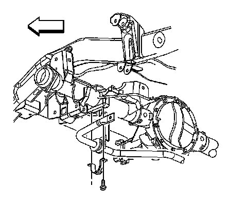

Rear Suspension
Stabilizer Shaft Insulator Replacement
Removal Procedure
1. Raise and support the vehicle. Refer to Lifting and Jacking the Vehicle.

2. Remove the stabilizer shaft insulator bracket mounting bolts.
3. Remove the stabilizer shaft insulators brackets.
4. Lower the stabilizer shaft and remove the stabilizer shaft insulators.
5. Inspect all of the parts for wear or damage.
Installation Procedure
Important: Place the stabilizer shaft insulators on the stabilizer bar with the slits facing toward the front of the vehicle.
1. Install the stabilizer shaft insulators to the stabilizer bar.
2. Install the stabilizer shaft insulator brackets to the rear axle.
Notice: Refer to Fastener Notice.
3. Install the stabilizer shaft bracket mounting bolts.
Tighten the insulator bracket bolts to 33 N.m (24 lb ft).
4. Lower the vehicle.